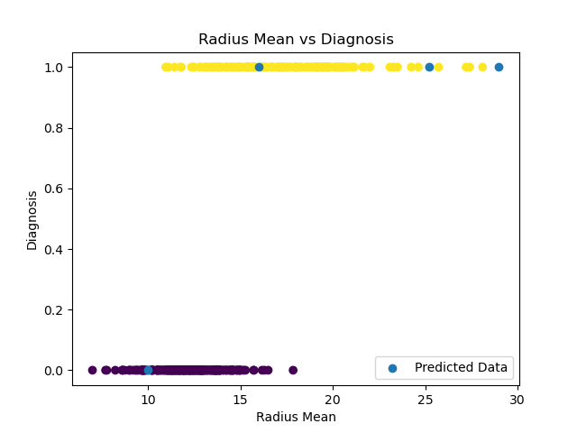

Breast Cancer Classification using The K-Nearest Neighbors Algorithm
In Machine Learning, KNN (K-Nearest Neighbors Algorithm) is a supervised learning classifier that groups data points into different classes and then uses proximity to make predictions. This code demonstrates the use of the algorithm to predict whether a breast mass excised from a patient is cancerous with an accuracy of 85%. The breast cancer dataset used in this code contains information about various features of breast masses, including the mean radius and the classification as malignant or benign. To prepare the data, the column containing the classification was transformed into binary values, where 1 represents malignant and 0 illustrates benign. The dataset was then split into training and testing sets, which were fed into the KNN algorithm function from the sklearn Python package to generate the graph shown above. In the graph, the yellow dots represent the malignant breast masses, the purple dots represent the benign masses, and the blue dots represent the mean radii of the patients we want to diagnose. The algorithm correctly groups the "test subjects" into their respective classifications, as depicted in the graph. You can find the code and the CSV file containing the breast cancer data used in the algorithm in the repository linked at the bottom of this webpage.